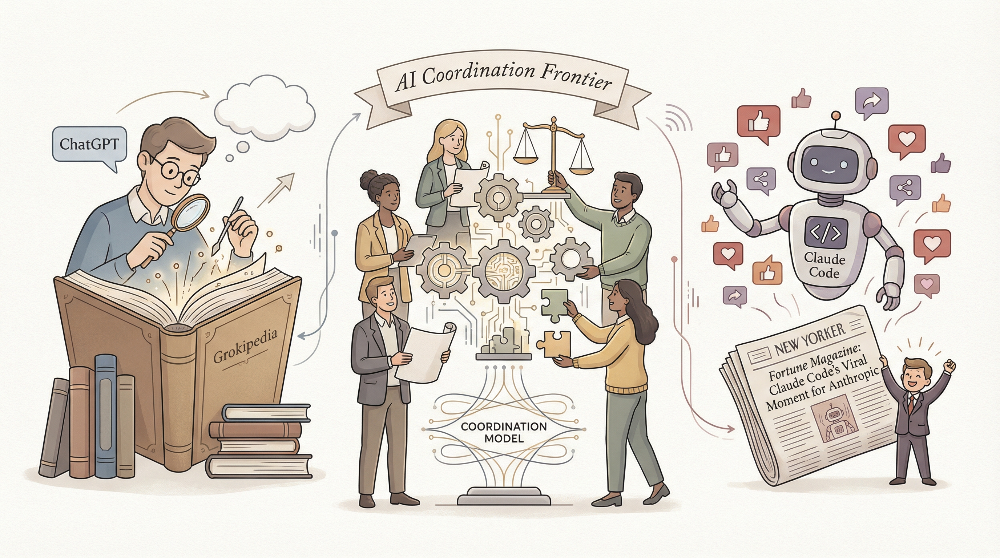

ChatGPT开始引用Elon Musk的Grokipedia内容作为答案来源。
两克伴AIGC日报
2026-01-26 星期一

本期关注：ChatGPT引用Grokipedia内容，Anthropic的Claude Code工具走红，新公司Humans&构建协作型基础模型，同时MCP服务器助力AI代理获取专业UI组件提升设计质量，Sentinel则为AI代理提供零信任治理降低执行风险。
📰 行业动态
由Anthropic前员工创立的新公司Humans&正在构建下一代协作型基础模型。
Anthropic的 Claude Code工具走红，吸引了远超预期用户群体。
🔥 今日焦点
标题：Show HN：MCP服务器助力AI代理获取真实UntitledUI组件
核心内容概述：Steffen Bilde开发了一款MCP服务器，为AI编码工具（如Claude Code和Cursor）提供直接访问UntitledUI组件库的途径。该服务器旨在解决AI生成UI界面时，缺乏专业设计的问题。
标题：Show HN: Sentinel – Zero-trust governance for AI Agents
简介：
Sentinel是一款由软件工程师azdhril开发的Python轻量级层，旨在为AI代理提供零信任治理解决方案。该工具的核心功能是围绕任何工具或函数构建，以减少大型语言模型（LLM）在执行任务时可能导致的错误风险。在当前AI技术迅速发展的背景下，给予LLM“写访问”权限存在潜在风险，如幻觉导致的误操作可能造成严重后果。Sentinel的出现，旨在解决这一痛点，通过在代理逻辑中嵌入人类干预机制，确保AI代理在执行关键任务时始终处于可控状态。
近日，一篇发表在biorxiv.org上的研究揭示了通用语言模型在生物结构发现领域的突破性进展。该研究指出，经过微调的通用语言模型，如GPT-2，在蛋白质同源性检测任务上实现了约84%的无监督准确率，这一成果打破了传统观念，即生物理解需要特定领域的预训练。
这一发现的重要性在于，它证明了通用语言模型在生物结构发现方面的潜力，为AI在科学领域的应用提供了新的思路。传统上，生物结构分析需要专门的算法和领域知识，而这一研究则表明，通用语言模型可以跨越不同领域的界限，实现跨学科的研究。
近日，作者teugent在产品领域发布了一项关于长时程大型语言模型（LLM）连贯性的500周期运行测试。该测试旨在评估LLM在数百次递归推理步骤中保持连贯身份和逻辑的能力，而不仅仅是输出质量。这一研究是SIGMA运行项目的一部分，该项目旨在为任何LLM提供一个认知控制层，实时跟踪模型的漂移、连贯性和身份持久性。
这项研究之所以重要，在于它挑战了现有LLM评估方法，后者通常只关注短期的推理跨度（1-10轮）。通过500周期的长时程测试，研究者能够更全面地评估LLM的连贯性和稳定性，这对于理解和提升LLM在实际应用中的表现至关重要。
📚 深度长文
《忘掉AI工具吧，AI代理将在2026年自动化你的生活》一文由The PyCoach撰写，深入探讨了AI代理在未来自动化生活中的重要作用。文章核心观点是，随着AI技术的飞速发展，AI代理将取代传统AI工具，成为我们日常生活和工作中不可或缺的助手。
文章通过多个关键论据支撑其观点。首先，AI代理具备自主学习能力，能够根据用户需求不断优化自身功能，从而实现高效自动化。其次，AI代理能够处理复杂任务，如数据分析、决策制定等，大大减轻人类的工作负担。再者，AI代理的广泛应用将推动社会生产力的发展，提高整体效率。
在人工智能领域，OpenAI正面临着前所未有的挑战。本文深入剖析了谷歌和Anthropic对OpenAI的双重围剿，揭示了OpenAI所面临的“生死抉择”。文章指出，谷歌和Anthropic在技术、资金和市场等方面对OpenAI构成了巨大压力，使得OpenAI不得不在战略方向上进行重大调整。文章通过详实的数据和案例，分析了OpenAI在应对挑战过程中的优势和劣势，并提出了应对策略。阅读本文，有助于AI从业者了解当前人工智能领域的竞争格局，洞察行业发展趋势，为自身发展提供有益借鉴。
---
本文深入探讨了没有博士学位和论文的“野路子”人才如何成功进入OpenAI等顶级AI大厂。文章指出，这些人才凭借对AI领域的深刻理解和实践经验，以及独特的思维方式，在激烈的竞争中脱颖而出。文章通过分析这些人才的成长路径、技术特长和职业素养，揭示了他们成功的关键因素。阅读本文，AI从业者可以从中获得宝贵的启示，了解如何提升自己的竞争力，实现职业发展。文章深度剖析了AI行业的现状和趋势，为读者提供了独特的见解，具有极高的阅读价值。
🛠️ 产品推荐
Show HN是一款由Rust语言编写的编程语言，旨在学习编程语言实现。该语言95%由开发者手动构建，部分代码借鉴了Gemini CLI。Show HN采用Cranelift（JIT编译）和LALRPOP（解析器）等技术，用户可通过它深入理解编程语言原理。该产品适用于对编程语言实现感兴趣的从业者，帮助他们提升语言设计和实现能力。
---
Show HN: vr.dev – AI coding assistant beta for XR/VR是一款专为VR/AR/XR开发打造的AI编程助手。该产品针对通用LLM在XR开发中给出错误答案的问题，通过RAG技术，结合最新的XR SDK更新和训练数据，为开发者提供准确、实时的编程辅助。vr.dev能够有效解决API变更频繁、训练数据陈旧、XR知识稀缺等问题，帮助开发者避免使用过时的方法签名和模式，提高开发效率。
---
BOX3D是一款基于浏览器的3D打印网格箱生成工具。该工具利用Three.js进行渲染，无需服务器支持，支持英寸、毫米和Gridfinity单位。用户可快速生成具有特定内部容量或外部尺寸的3D打印箱，有效解决设计迭代中需要快速调整箱体参数的问题，无需打开CAD软件，提高设计效率。